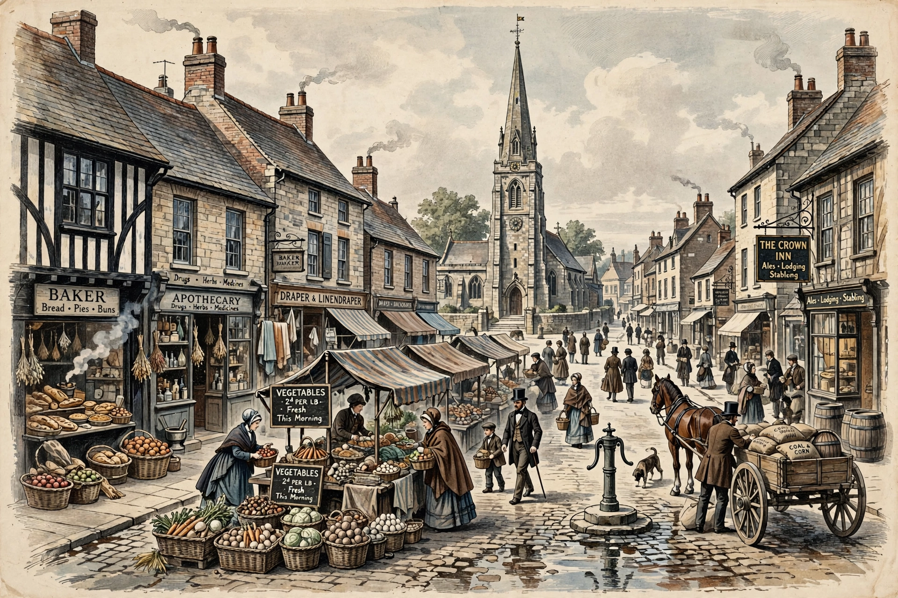

| Middlemarch, A Study of Provincial Life | |
|---|---|
 | |
| Author | George Eliot (Mary Ann Evans) |
| Country | United Kingdom |
| Language | English |
| Genre | Novel |
| Published | 1871–72 (serial); 1874 (book) |
| Publisher | William Blackwood and Sons |
Middlemarch, A Study of Provincial Life is a novel by the English author George Eliot (Mary Ann Evans), first published in eight instalments (volumes) between 1871 and 1872. Set in Middlemarch, an imaginary English Midlands town, in the years just before the Reform Act 1832, it follows the lives of a large cast of characters and explores themes of marriage, ambition, idealism, religion, political reform, education, and the status of women.
The novel weaves together several interlocking stories. Dorothea Brooke, an intelligent and idealistic young woman, marries the elderly scholar Edward Casaubon in the hope of sharing his intellectual life, but the marriage proves stifling. Tertius Lydgate, an ambitious young doctor, brings reforming ideas to Middlemarch but is drawn into a disastrous marriage with the beautiful, spendthrift Rosamond Vincy. Fred Vincy, Rosamond's brother, struggles with debt and his love for Mary Garth. The banker Nicholas Bulstrode harbours a secret from his past that is eventually exposed by John Raffles. Will Ladislaw, Casaubon's young cousin, falls in love with Dorothea.
The novel is renowned for its psychological insight, its wide social canvas, and its subtle analysis of how individual lives are shaped by the "web" of social relations. Eliot's narrator famously remarks that "we are all of us born in moral stupidity, taking the world as an udder to feed our supreme selves."
Middlemarch is widely considered one of the greatest novels in English literature. Virginia Woolf called it "one of the few English novels written for grown-up people." In 2015 it topped a BBC Culture poll of critics for the greatest British novel. It has been adapted several times for radio, theatre, and television, notably the BBC's 1994 serial.
See also: Adam Bede; The Mill on the Floss; Silas Marner; Victorian literature.